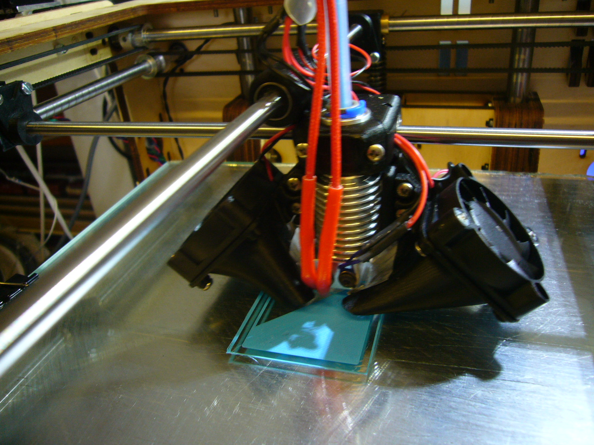
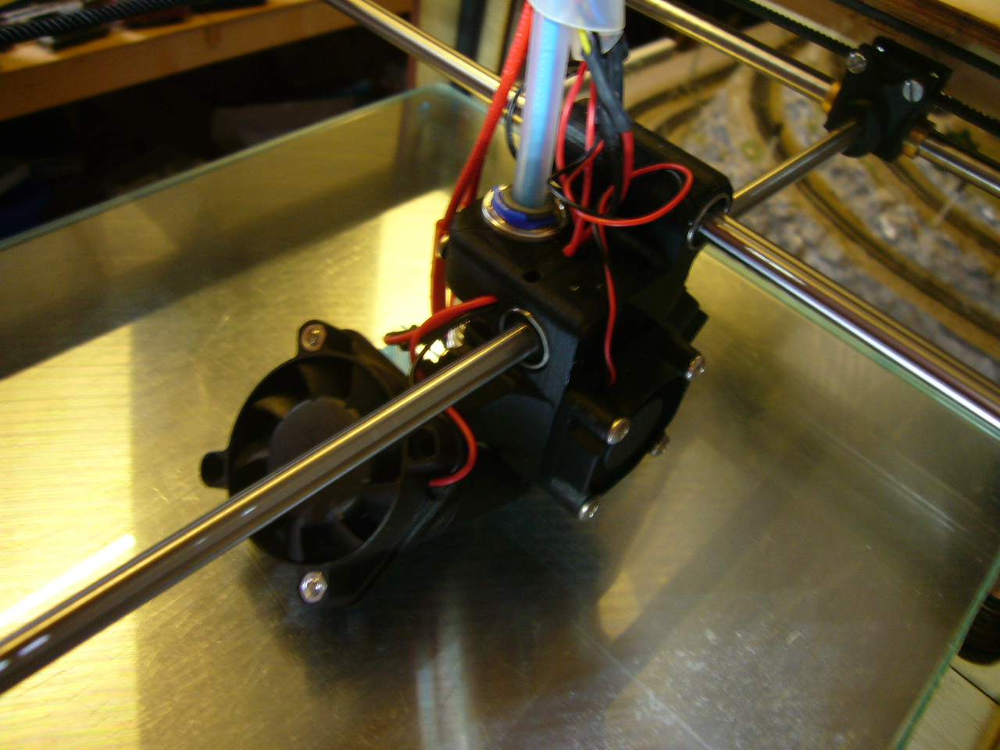
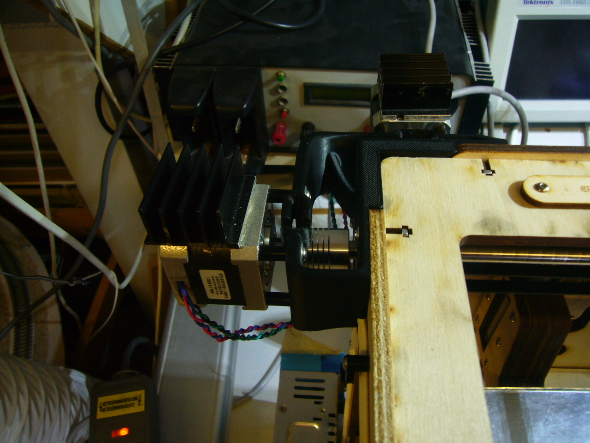
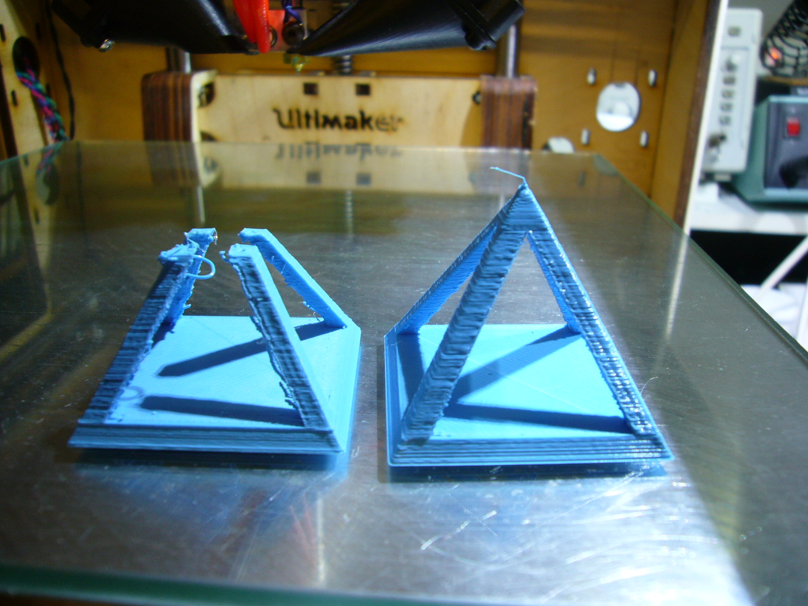

E3d hotend and direct drive
After printing about half a rol of ABS I started noticing that the
printer was not extruding at the speed that it used to do. My fear
is that the teflon part in the hotend is starting to deform. Since I
use ABS for most of my prints I decided to buy a E3D hotend. They just
released version 6 of their famus hotend so I decided to go for it.
Ultimaker user Rai publisched a nice looking adaptor and I printed that
while my old hotend was still operational. Since I was at it I decided
also to upgrade to direct drive of the x and y axis (Nick's mount) and use the Alan blocks.
I ordered 2 axis at Conrad which I cut to the right size. Actually cutting
was not that hard a normal iron saw could cut right through. I didn't use
the old axis since mounting the 16mm blocks for extending the baring does
not work wel in the front. I also did not want to loose printing area. Actual
with the new axis and mounting the pullies the other way arround I have been
able to go to 210x210 printing area.


Here is also a foto of the direct drive. I used the 20mm ultimaker screw to mount
the motor since the hex screw did not arrive yet. With the small hex key I have been
able to fasten the motor (it took some time to get to that). There are some rummers
that the mount is not stable and yes if you press on the motor there is some flex.
But the motor can not rotate. I printed it with ABS with atleasest 25% infill. I see
no movement in the mount while printing.

I did my first test run with the open pyramide for tunning the retraction settings. The left
print is with 2mm retraction and the right with 2.5mm. While printing I played with speed
and temperature. You also see that left print did not finish. The hotend started bump into
the sides due to the material buildup (normally I would have pressed it down a little while
printing) and all of sudden the pyramide let loose of the platform so it was not the hotend
causing the failure.

After a year of succesfull printing did the Alan blocks fail on me. They we starting to loose the bearing.
So I looked arround to find a block that is screwed together. I found the solution in the mooncactus blocks.
Fortunatly the design was done in scad so I was able to make them 1mm smaller so the head can move 1mm closer.
It does not sound much but I am glad I did since when I put them in my machine I needed all the room I could
get. The Alan blocks were very compact.